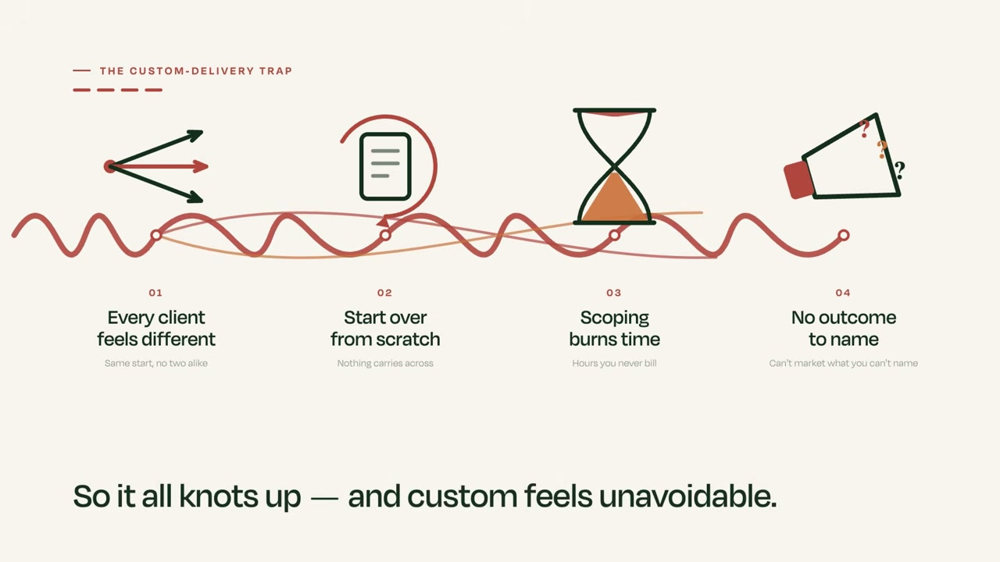

Разбор интро: Greg Hickman, «How to Stop Customizing Delivery for Every Client»
Грег Хикман — американский консультант, который учит агентства и сервисные бизнесы превращать
услугу «под каждого клиента своё» в повторяемый продукт. Ролик на 16 минут, вышел на его
YouTube-канале. Разбирается только интро — первый блок, где автор не объясняет тему,
а продаёт досмотр: показывает боль, доказывает, что она общая, обещает решение.
Граница интро — 0:55. На 0:55.2 звучит «So, the first step is to build your modular framework» —
слово-переключатель «первый шаг» ровно после обещания «вот пять шагов». До этой точки речь
в будущем времени и обещаниях («вот проблема», «вот большая идея», «вот пять шагов»),
после — настоящее и действие («достаём из головы и кладём в фреймворк»). Монтажно
интро — один непрерывный анимированный слайд (0:00–0:23) и одна говорящая голова (0:23–0:55),
всего две склейки; сразу после 0:55 плотность склеек скачком вырастает: 0:54.9, 0:58.9,
1:07.9, 1:18.5, 1:21.0. Речь дана в переводе, оригинал — мелкой строкой под каждой мыслью.
Фрагмент — первые 57 секунд ролика. Таймкоды в разборе ниже кликабельны:
перематывают этот плеер.
2. Паспорт интро
0:55
длина интро
типичное интро 60–90 с — это короткое
2
склейки
почти нет монтажа: слайд и лицо
27 с
средний план
в плотных интро 2–4 с; здесь в 8 раз длиннее
195
слов в минуту
разговорная норма английского ~150, у ютуберов 180–200 — верх нормы
179
слов всего
за 55 секунд
4
мысли
законченных смысловых блока
2
сцены
анимированный слайд + говорящая голова
Цифры нужны для сравнения между роликами. Главная особенность этого интро: оно почти
не смонтировано. Внимание держится не сменой картинок, а темпом речи и тем, что слайд
дорисовывается прямо по ходу фразы — четыре пункта боли появляются один за другим,
пока автор их называет.
Вы наверняка думаете, что делать каждому клиенту своё — неизбежно. Все ведь приходят
с чуть-чуть разной ситуацией. А значит, каждый проект начинается с нуля: вы заново
считаете объём работ, это съедает время, и вы не можете продвигать себя,
потому что не в состоянии назвать один конкретный результат, который выдаёте всегда.
Мой клиент Лен думал ровно так же. Он пришёл с задачей упаковать в продукт свою работу
по внедрению Zoho CRM. Он уже разложил всё, что делает для клиентов, в повторяемые
фреймворки — и всё равно был убеждён, что каждому нужно что-то своё.
Вот большая идея. Меняется не то, чего клиенты хотят, и не то, что им нужно. Меняется
только порядок, в котором вы выдаёте свои навыки и результаты, чтобы довести человека
до того итога, который ему нужен.
Дальше — пять шагов, как дать клиенту ощущение работы под него и при этом
упаковать в продукт всё, что вы делаете.
4. Цепочка ходов
Боль сразу, без представления→Разворачивание боли в четыре следствия→«Не ты один» через кейс клиента→Снятие вины: даже с фреймворками так думают→Большая идея одной фразой→Обещание пяти шагов
Чего в этом интро нет: приветствия, представления себя, авторитета через регалии,
результата «до/после» с цифрами, просьбы досмотреть, подарка за подписку. Вход — прямо
в боль с первого слова «So, here's the problem». Роль авторитета выполняет кейс клиента,
названного по имени.
5. Разбор по мыслям
0:00 — 0:19Боль + её следствия190 слов/мин — ровный темп
Итак, вот в чём проблема. Вы, скорее всего, думаете, что делать под каждого клиента своё —
неизбежно, потому что каждый клиент кажется немного другим. А значит, каждый проект
начинается с нуля. Вы считаете объём работ, это превращается в чистую трату времени,
и вы не занимаетесь продвижением себя, потому что не можете назвать один конкретный
результат, который выдаёте всегда.
So, here's the problem. You probably think that custom delivery is unavoidable because every
client probably feels a little bit different. So, that means every engagement starts from
scratch. You scope projects, which that turns into a whole time suck, and then you don't
actually proactively market yourself because you can't name one specific outcome that you
always deliver.
Мой клиент Лен думал ровно то же самое. Он пришёл к нам с задачей упаковать в продукт
свою работу по внедрению Zoho CRM. Он разложил всё, что делал для клиентов,
в повторяемые фреймворки — и всё равно был убеждён, что каждому клиенту нужно что-то своё.
Now, my client Len, he thought the exact same thing. He came to us and he was looking to
productize his Zoho CRM implementation work. Now, he mapped everything he has done with his
clients in repeatable frameworks, but he was still convinced that each client needed
something different.

0:35 — 0:47Большая идея185 слов/мин — тормозит на ключевой фразе
Так вот, большая идея. Дело не в том, что меняется, чего они хотят или что им нужно.
Меняется только порядок, в котором вам надо выдавать свои навыки и результаты,
чтобы довести их до того итога, который им действительно нужен.
So, here's the big idea. It's not that what they want or what they need actually changed.
It's just the order in which you need to deliver your skills and deliverables to get them
to the outcome that they actually want.
0:47 — 0:55Обещание200 слов/мин — разгон на выходе
Итак, вот пять шагов, как дать клиентам ощущение, что всё делается под них,
и при этом упаковать в продукт каждую вещь, которую вы делаете.
So, here's the five steps to give your clients a customized experience while still
productizing every single thing that you do.